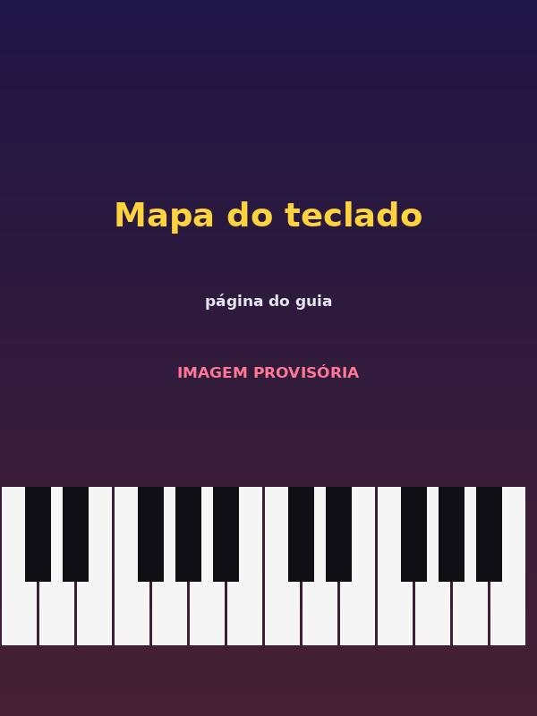
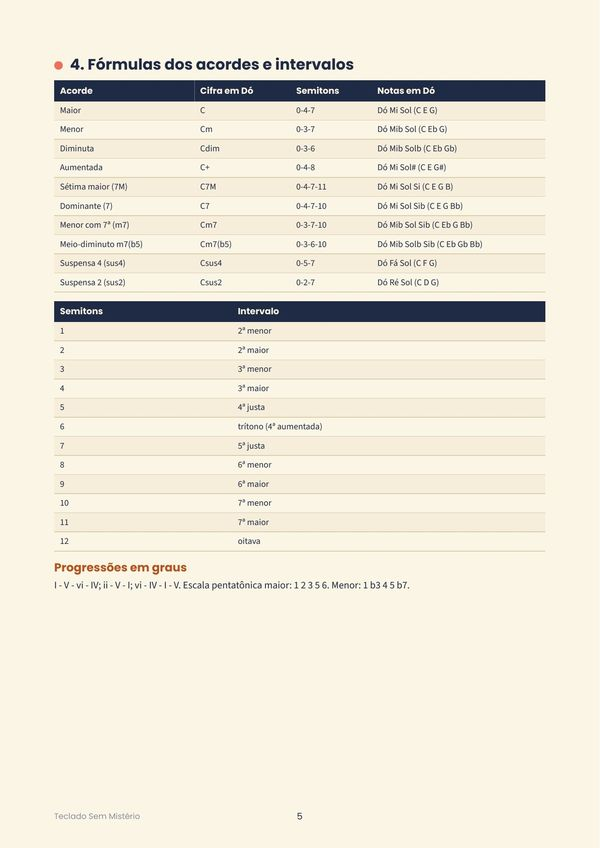
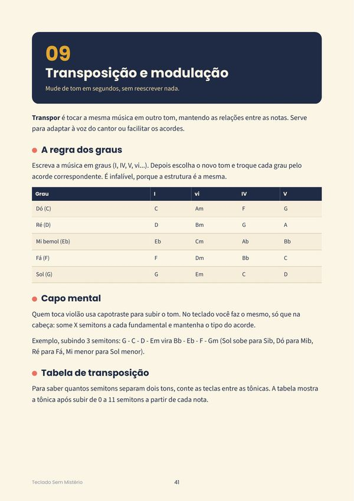
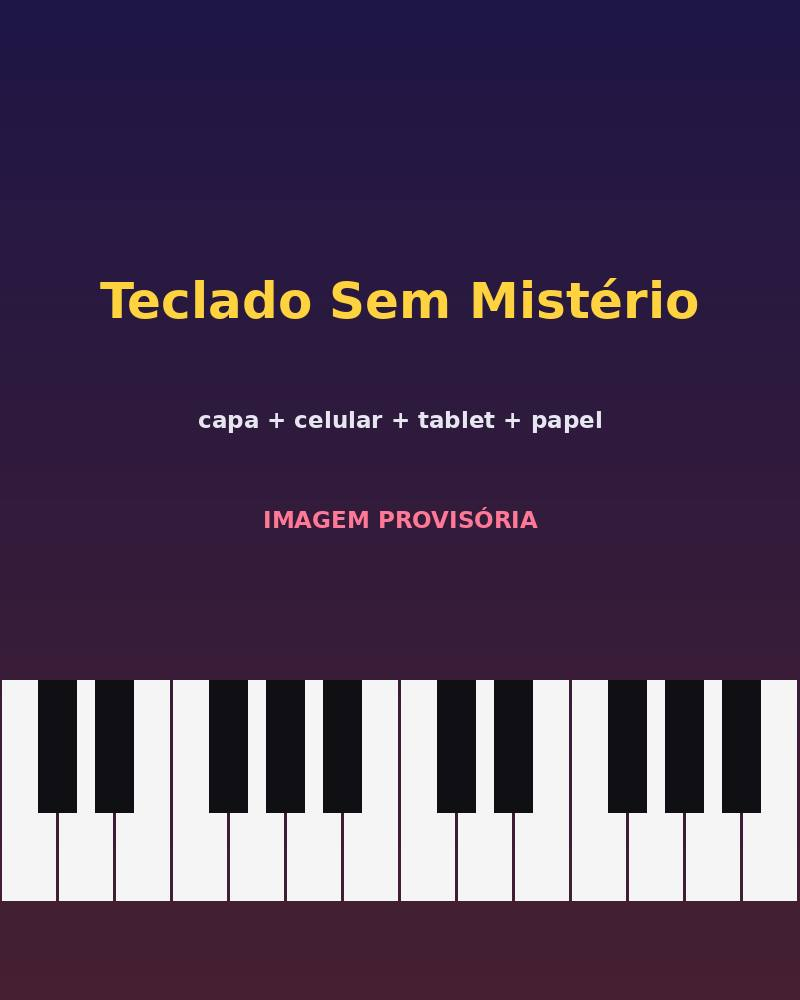
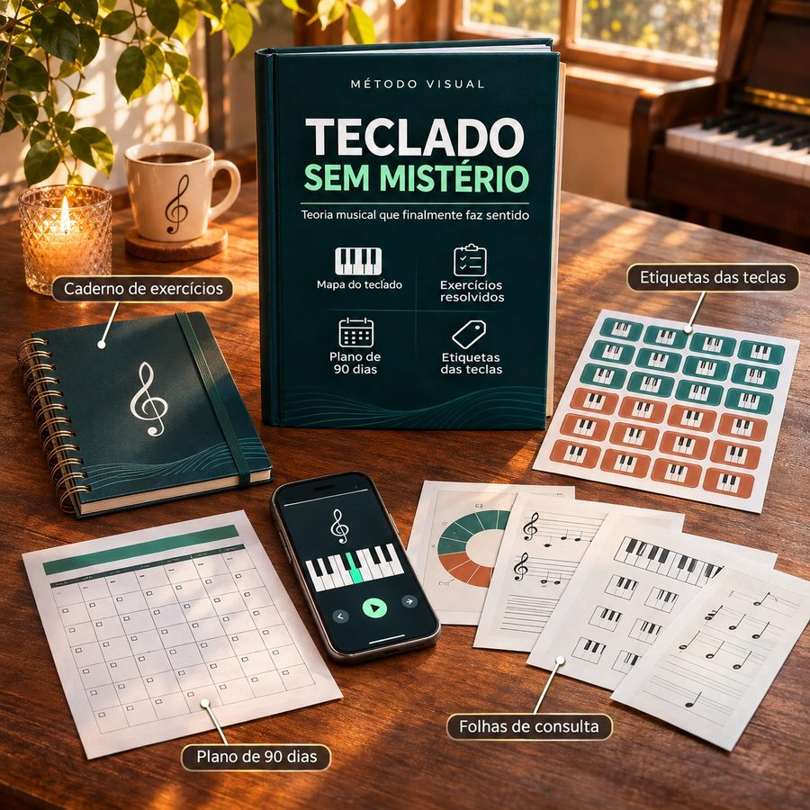
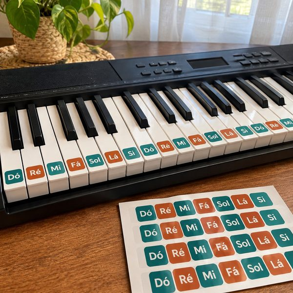
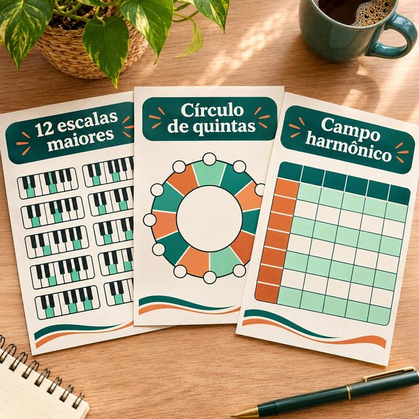

Folheie o guia
Arraste para o lado →





Teoria musical para quem toca teclado sozinho
Entenda o teclado de verdade, sem partitura, sem conservatório e sem decorar acordes. O guia visual que transforma o teclado de confuso em óbvio.

De R$ 99,90 por R$ 27,00 · pagamento único · garantia de 7 dias
Você começa do zero, no nome de cada tecla.
É seu para sempre. Sem assinatura, sem bloqueio.
Com gabarito, para saber se você está fazendo certo.
A verdade incômoda
Você sabe tocar. O que você não sabe é por que funciona o que você toca. Esse é o muro.
As mesmas 4 posições, sempre no mesmo lugar.
O teclado inteiro vira um mapa que você enxerga.
Leia isso antes de se culpar
A maioria do material foi escrita por quem estudou em conservatório, para quem lê partitura. Muito termo em italiano, pentagrama, tradução mal feita.
Partitura, termos em italiano, listas para decorar, explicação traduzida que ninguém entende.
Seu instrumento desenhado, cada grau na tecla exata, cifra brasileira e diagramas coloridos.
A teoria faz sentido quando você para de tentar decorar e começa a enxergar ela desenhada nas teclas.
O método
Cada ideia aparece desenhada no teclado, em cores, com a nota nos dois jeitos: Dó (C).
Você leu, já coloca a mão no teclado e toca. Nada de teoria solta.
44 exercícios com gabarito. Você sabe na hora se acertou.
O PACOTE COMPLETO

| Material comum | Teclado Sem Mistério |
|---|---|
| Texto denso | Explicação visual, frases curtas |
| Traduzido de fora | Escrito em português, com cifra brasileira |
| Decorar | Entender e montar pela fórmula |
| Pentagrama | Desenhado no teclado |
| Sem exercícios | 44 exercícios com gabarito |
| Pacote de mapas soltos | Método completo + plano de 90 dias |
| Extras vendidos à parte | 5 bônus inclusos |
O que tem dentro
Nome de cada tecla nos dois jeitos, Dó (C), Ré (D), Mi (E). Onde ficam as oitavas no seu teclado de 61 teclas. Sustenido e bemol sem confusão.
Por que cada tom tem suas notas. A receita da escala maior e menor, para montar qualquer uma sem decorar.
Por que um acorde soa alegre, triste ou tenso. Contar distâncias no teclado em vez de adivinhar.
Maior, menor, aumentado, diminuto. Uma fórmula vale para os 12 tons. Leitura de cifra brasileira: Am, F#m, Bb, C/E.
C7M, Dm7, G7, sus4 e as inversões. O que cada símbolo da cifra pede para a sua mão fazer.
O campo harmônico desenhado no teclado. Os graus (1º, 4º, 5º) e como eles mostram o próximo acorde.
Compasso, pulsação e levadas simples para não ficar só segurando acorde.
Mão esquerda no baixo, direita no acorde. Inversões para trocar de acorde sem pular pelo teclado.
Subir meio tom, descer um tom, tocar a mesma música em outra tonalidade usando os graus. Ideal para o louvor.
Achar o tom da música e testar os graus mais prováveis em vez de tentar tecla por tecla.
Usar a escala do tom para enfeitar, fazer introduções e montar suas próprias progressões.
Arraste para o lado →




Os 44 exercícios em folhas para imprimir e fazer à mão, com gabarito separado para conferir.

Imprima, recorte e cole. Em poucos dias você enxerga cada nota sem precisar contar.

O que fazer em cada dia, em sessões de cerca de 12 minutos. Você nunca fica sem saber por onde seguir.

Escalas, campo harmônico nas 12 tonalidades, círculo de quintas e fórmulas dos acordes. Deixe do lado do teclado.

Treino de ouvido, bases para improvisar, teclado interativo e uma rotina de 12 minutos. Liberado depois da compra.
Para quem toca no louvor
Quem toca na igreja conhece a cena: a música sobe meio tom no meio do culto, a banda acompanha e você fica procurando onde colocar a mão.
É um kit para você sair do lugar: o guia, o gabarito, o caderno, as etiquetas, o plano de 90 dias e as folhas de consulta.
Garantia incondicional de 7 dias. Se não gostar, pede o reembolso e recebe 100% de volta. O risco é todo nosso.
O YouTube tem peças soltas, cada vídeo de um jeito, e você acaba voltando sempre no mesmo vídeo. O guia é a sequência na ordem certa, do mapa do teclado até a improvisação, com exercício e gabarito para você ter certeza de que entendeu. Tudo num lugar só, para consultar quando quiser.
Pacote de mapas é figura solta, normalmente feita para professor. Aqui é um método completo para quem toca teclado: cada página mostra a ideia, você aplica no teclado na hora e confere no gabarito. E vem com caderno de exercícios, etiquetas para as teclas, folhas de consulta e um plano de prática de 90 dias para você saber o que fazer em cada dia.
Serve. O guia começa no nome de cada tecla e vem com etiquetas para você colar no teclado. Não precisa ler partitura. O foco é entender o que você toca, passo a passo. Se você quer só tocar uma música específica amanhã sem entender nada, aí uma cifra pronta resolve melhor.
Na maioria das vezes não é falta de dom, é falta de mapa. Quando você entende campo harmônico e graus, você começa a prever os acordes. Esse é o primeiro passo para tocar de ouvido, e ele se treina.
O guia é curto e direto, com plano de 90 dias em sessões de cerca de 12 minutos. O arquivo é seu para sempre: ninguém bloqueia seu acesso depois de um tempo. E se não gostar, você tem 7 dias de garantia incondicional.
Sim. Tudo foi pensado para o teclado de 61 teclas, de qualquer marca. Se o seu tiver mais teclas, funciona igual.
Não. Tudo é mostrado desenhado no teclado e com cifra brasileira (C, Dm7, G7, C7M).
Logo depois da confirmação do pagamento, você recebe o acesso no seu e-mail. No Pix costuma ser na hora. Dá para abrir no celular, tablet ou computador.
Pode. O caderno de exercícios, as etiquetas das teclas, o plano de 90 dias e as folhas de consulta foram feitos para imprimir. O guia você pode ler na tela ou imprimir também.
Você tem 7 dias de garantia incondicional. Pede o reembolso pelo e-mail de suporte e recebe 100% do valor de volta, sem perguntas.
Acesso imediato por e-mail · para sempre · garantia de 7 dias